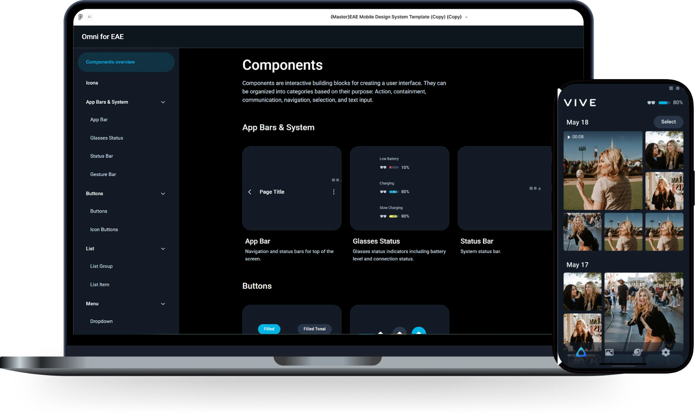

AI-NATIVEDESIGN - TO-CODE WORKFLOW
Design-to-Code
組件模板系統
透過 AI 可直接生成原型的前端組件模板，設計師只要給出 UI 設計稿/Wireframe，加上一段 Prompt，就能生成符合規範、可以直接交給開發的前端互動原型。
生成演示
02 / LIVE DEMO
輸入UI/UX示意圖，
即可生成前端原型。
設計師透過輸入 UI 設計稿 / UX Wireframe，加上一段 Prompt，即可生成符合設計系統規範的前端互動原型。取代過去需要手動製作 Figma Prototype。
Prompt
等待生成
- 讀取 Guidelines.md 規則
- 套用 globals.css Tokens
- 組合 Omni 組件
- 輸出 App.tsx
為什麼做
UX → UI → Figma Spec → 前端程式碼
- 痛點交付流程長，每一步都在重做
- 目標UX 設計師用簡單示意圖就能生成接近交付的前端代碼稿，交給開發直接落地
我的角色
UI 與 RD 之間的橋樑，負責搭建這套系統的核心。
- 引入 UI 素材庫，把既有組件與動效說明轉成可執行的組件代碼與 Guidelines.md
- 先做小規模測試，驗證 Figma Make AI 的可行性
- 以小範圍 Prototype 與開發一起實驗、溝通、測試
- 整理成果分享給內部團隊，推動導入使用
03 / HOW IT WORKS
Design System 轉換成
AI 能遵守的三份檔案。
Figma Make 本身就能用 Prompt 生成網頁，但每次生成都會重新發明組件和樣式。關鍵是先把既有 Design System 結構化成模板，讓 AI 只能依照定下的規則文檔進行組件組裝頁面，而不是重新畫頁面。
FIGMA DESIGN SYSTEM → FIGMA MAKE 組件模板（點選查看）
04 / OUTCOME
從交付設計稿，
變成交付可運行的程式碼。
5 – 6 → 1 – 1.5 天/人
- 90% / 70%
- UI 設計稿／Wireframe 輸入的版面還原
- 01交付時就有程式碼基礎
交付物從靜態稿變成可執行的原型，開發不必從零重做版面。
- 02解決 AI 生成 Prototype 組件一致性問題
Tokens、組件與規則一起約束 AI，生成結果穩定遵循規範。
- 03更早驗證 UX
UI 細化前就有可操作原型，提早發現流程問題。